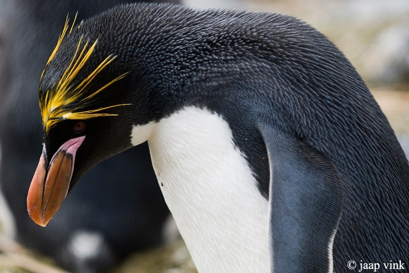
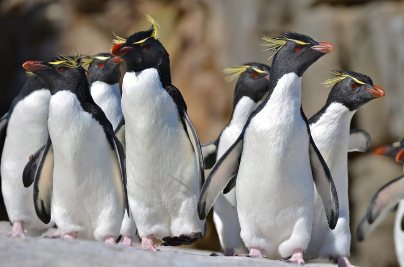
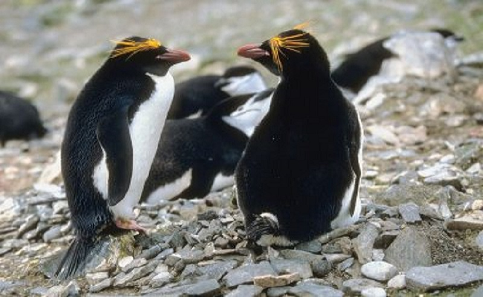

동물 보호 단체 황제펭귄 킹펭귄 아델리펭귄 훔볼트펭귄 마카로니펭귄 바위뛰기펭귄 쇠푸른펭귄 노란눈펭귄 마카로니펭귄 이마의 노란 볏이 특징인 펭귄입니다. 키: 약 76cm 몸무게: 수컷-3.3kg~6.4kg, 암컷- 3.2kg~5.7kg 분포: 남극 부근에서 남극 반도(사우스샌드위치 제도, 포클랜드 제도 등) 몸집이 크고 볏이 달린 펭귄으로, 머리, 턱, 목, 그리고 등쪽 부분은 검은색이고 하얀색 부분과 경계선이 뚜렷하게 구분됩니다. 새로 생긴 검은 깃털은 푸르스름한 빛을 띠고, 늙으면 갈색을 띄며, 가장 두드러진 특징은 이마 중앙 부분에 생긴 노란 볏이 목 뒤쪽까지 수평으로 뻗어 있다는 점입니다. 볏은 번식하기 1,2년 전인 3~4년된 펭귄에서 완전하게 자랍니다. 마카로니 펭귄의 털갈이는 1년에 한 번 하는데, 오래된 깃털을 모두 교체하는 과정을 거칩니다. 마카로니 펭귄들은 털갈이 전에 2주동안 지방축적을 하는데 그 이유는 털이 없으면 먹이를 찾아 물속에 들어갈 수 없어서 털갈이 기간동안 아무것도 못 먹기 때문입니다. 이 과정은 보통 3~4주가 걸리며, 마카로니 펭귄들은 해안가에 앉아서 이 시간을 보냅니다. 일단 끝이나면, 펭귄들은 바다로 돌아가고 봄에 짝짓기를 하기위해 그들의 식민지로 돌아갑니다.   
이마의 노란 볏이 특징인 펭귄입니다.
키: 약 76cm 몸무게: 수컷-3.3kg~6.4kg, 암컷- 3.2kg~5.7kg 분포: 남극 부근에서 남극 반도(사우스샌드위치 제도, 포클랜드 제도 등)
몸집이 크고 볏이 달린 펭귄으로, 머리, 턱, 목, 그리고 등쪽 부분은 검은색이고 하얀색 부분과 경계선이 뚜렷하게 구분됩니다. 새로 생긴 검은 깃털은 푸르스름한 빛을 띠고, 늙으면 갈색을 띄며, 가장 두드러진 특징은 이마 중앙 부분에 생긴 노란 볏이 목 뒤쪽까지 수평으로 뻗어 있다는 점입니다. 볏은 번식하기 1,2년 전인 3~4년된 펭귄에서 완전하게 자랍니다. 마카로니 펭귄의 털갈이는 1년에 한 번 하는데, 오래된 깃털을 모두 교체하는 과정을 거칩니다. 마카로니 펭귄들은 털갈이 전에 2주동안 지방축적을 하는데 그 이유는 털이 없으면 먹이를 찾아 물속에 들어갈 수 없어서 털갈이 기간동안 아무것도 못 먹기 때문입니다. 이 과정은 보통 3~4주가 걸리며, 마카로니 펭귄들은 해안가에 앉아서 이 시간을 보냅니다. 일단 끝이나면, 펭귄들은 바다로 돌아가고 봄에 짝짓기를 하기위해 그들의 식민지로 돌아갑니다.